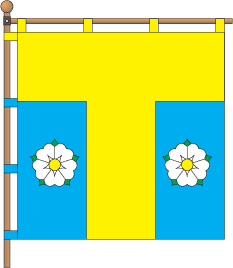

Tomashpil
City of Ukraine on Vinnitsa district histoty The area around Tomashpol
is very interestingb. Nearby, archaeologists discovered important
remains of the Tryplian culture (approx. 3000 BC), traces of ancient
Greek and Roman cultures (from the 4th century BC) were also found. The
first written mention of Tomashpil dates back to 1616, and even to 1459
- under the initial name: Dragushov.

History
According to historical documents, in 1580 the lands located along the
Murafi, Busha, Rusava, Yalanka, and Markivka rivers fell into the
possession of the Polish magnate Jan Zamoyski (1541-1605). Crown
Chancellor, who in the following years began to strengthen the region,
build fortresses and castles in Shargorod, Yampol, Stina (Yangorod),
Komargorod. Jan Zamoysky's possessions included the Dragushov lands and
the Dragushov hillfort. In the first years of the 17th century, Jan
Zamoyski gave his son Tomasz a manor and land along the Rusava River and
its tributaries. In 1616, Tomasz Zamoyskyi began to complete the
construction of a castle on the wasteland of the village of Prokopintsi,
opposite Lake Biele. Tomashpil was first mentioned in 1616. The Polish
scientist O. V. Yablonovsky in his works "Historical Sources" writes
that the Poles, after the union of 1569, renamed many so-called
"Wastelands", or settlements in the Braslav region. It is written about
Tomashpil that it used to be called Dragushov.